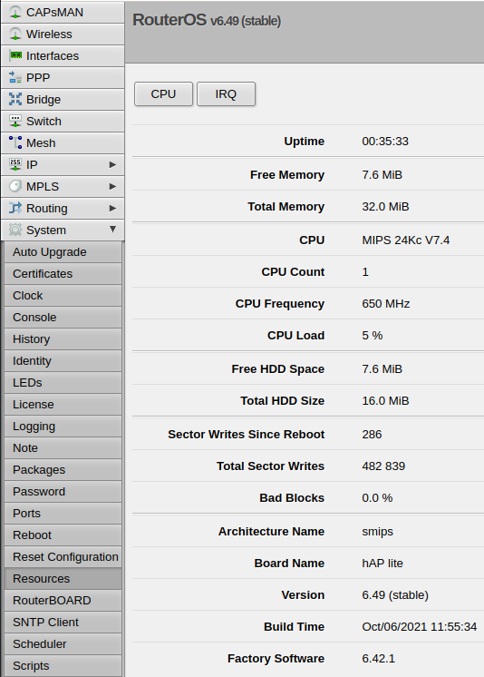

В роутере Mikrotik hAP Lite свободную память можно посмотреть двумя путями: через Web-интерфейс и через консоль.
Через Web-интерфейс просмотр делается в меню WebFig, по пути: System -> Resources, строка Free Memory.

Чтобы посмотреть свободную память через консоль, следует давать команду:
/system resource print
В ответ будет выдана примерно такая информация, в которой будет строка free-memory: